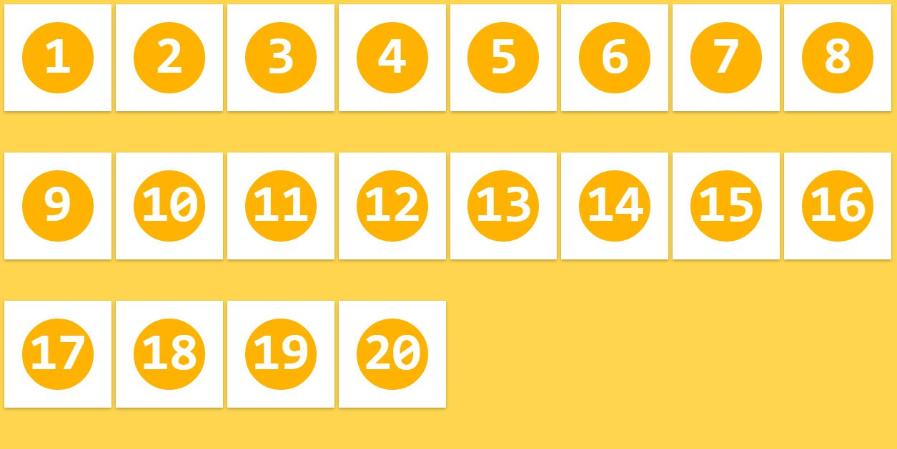

Hola, Flexbox!
exus-tw.github.io/hola-flexbox
Historia del Layout en CSS
Tablas
....
...
...
...
...
=======
Introducción
Historia CSS Layout
Tables
>>>>>>> Stashed changesProblemas
-
<<<<<<< Updated upstream
- Contenido y layout mezclados
- Cero acessibilidad
- Código dificil de leer
- No es semántico

Box Model
- Separa estilo del markup
- Muy utilizado hoy en día
- Esto permitió a la web que conocemos hoy
.button {
display: block;
float: right;
width: 200px;
height: 20px;
padding: 10px;
border: 1px solid #333;
}
.footer {
position: fixed;
bottom: 0;
margin-top: 10px;
}
=======
Box Model
>>>>>>> Stashed changesClearfix Hell
.clearfix {
content: "";
display: table;
clear: both;
}
Posicionar items en la misma linea
.inline {
display: inline;
float: left;
display: inline-block;
}
Grids
- Abstracción del box model
- Comenzó con Blueprint
- Creado para poder utilizar columnas

 =======
=======
Grid Systems
>>>>>>> Stashed changesProblemas
-
<<<<<<< Updated upstream
- La mayoría no es semántico
- Dependencia de una biblioteca externa
- Se basa en el viejo modelo de Box Model
...
...
...
...
...
...
Flexbox
=======Native CSS Layout
- Grids
- Flexbox
- Region
- Exclusions
¿Por qué usar Flexbox?
- Layouts modernos no presente
- Directo en css
- Resolver viejos problemas en CSS

¿Cómo usar Flexbox?
Modelo Container(parent)/item(child):
.flex-container
.flex-item (dentro del container)

Propiedades de flexbox
.flex-container
- flex-direction: controlar el flujo del contenido horizontalmente y verticalmente
- flex-wrap: controlar la distribución del contenido en lineas y su dirección
- justify-content: alinear el contenido con respecto al eje principal (main-axis)
- align-items: alinear el contenido con respecto a la cruz (cross-axis)
- align-content: alinear las lineas del container con respecto a la cruz
.flex-item
- order: ordenar la presentación de los items
- flex-grow: factor de crecimiento de un item respecto a los otros items
- flex-shrink: factor de encogimiento de un item respecto a los otros items
- flex-basis: determina el tamaño inicial de un item
- flex: (shorthand) para flex-grow, flex-shrink y flex-basis
flex-direction
<<<<<<< Updated upstreamControlar el flujo del contenido horizontalmente y verticalmente.
.flex-container {
flex-direction: row | row-reverse | column | column-reverse;
}
row

row-reverse

column

column-reverse

flex-wrap
Controlar la distribución del contenido en lineas y su dirección.
.flex-container {
flex-wrap: wrap | nowrap | wrap-reverse;
}
wrap

nowrap

wrap-reverse

justify-content
Alinear el contenido con respecto al eje principal (main-axis).
.flex-container {
justify-content: flex-start | flex-end | center | space-between | space-around;
}
flex-start

flex-end

center

space-between

space-around
 =======
=======
- flex-direction: row
align-items
Alinear el contenido con respecto a la cruz (cross-axis).
.flex-container {
align-items: stretch | flex-start | flex-end | center | baseline;
}
stretch

flex-start

flex-end

center

baseline

align-content
Alinear las lineas del container con respecto a la cruz.
.flex-container {
align-content: stretch | flex-start | flex-end | center | space-between | space-around;
}
stretch
flex-start

flex-end

center

space-between

space-around

order
Ordenar la presentación de los items.
.flex-item {
order: -integer-;
}

flex-grow
Factor de crecimiento de un item respecto a los otros items.
.flex-item {
flex-grow: -number-;
}
flex-shrink
Factor de encogimiento de un item respecto a los otros items.
.flex-item {
flex-shrink: -number-;
}

flex-basis
Determina el tamaño inicial de un item (si el espacio lo permite).
.flex-item {
flex-basis: auto | -width-;
}

flex
(shorthand) para flex-grow, flex-shrink y flex-basis.
.flex-item {
flex: none | auto | [ flex-grow flex-shrink | flex-basis ];
}
align-self
This align-self property allows the default alignment (or the one specified by align-items) to be overridden for individual flex items. Refer to align-items explanation for flex container to understand the available values.
.flex-item {
align-self: auto | flex-start | flex-end | center | baseline | stretch;
}
Ejemplos de layouts